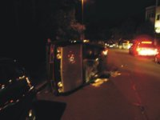

Das Main-Echo betitelt so einen fast wörtlich übernommenen Polizeibericht zu einer Aktion gegen ein Nazitreffen in Aschaffenburg. Da es die Zeitung offenbar nicht für nötig erachtet über eventuelle Hintergründe der Ereignisse zu recherchieren, holen wir das für euch an dieser Stelle nach.
In einem Bericht auf Indymedia (Klick) wird darauf hingewiesen, dass nicht zum erstenmal Neonazitreffen in der Gaststätte stattfanden und das es warscheinlich ist, dass sich dort ein neuer Treffpunkt für die örtliche Naziszene etabliert. Die Gaststätte ist dem Vereinsheim der“Schützengesellschaft 1917 e.V. Aschaffenburg – Damm„angegliedert. Ob und inwiefern Nazis selbst im Verein aktiv sind ist unbekannt. Was eine solche Verbindung für die gewaltbereiten regionalen Nazis der NPD und alle diejenigen, die nicht in deren menschenfeindliches Weltbild passen bedeutet, kann sich ja jeder selbst denken. An dieser Stelle sei auf die häufigen Waffenfunde bei Neonazis in der Region Aschaffenburg/Miltenberg hingewiesen.
Weiterhin wird in dem Bericht darauf verwiesen, dass an der Organisation des Treffens diejenigen Nazis beteiligt waren, die an den gewalttätigen Übergriffen an einem NPD-Infostand am 30. August beteiligt waren (hierzu die PM des BgR Aschaffenburg/Miltenberg). Schon damals druckte das Main-Echo nur unkommentiert einen Polizeibericht ab, in dem nur von einem Übergriff am Infostand direkt die Rede war. Obwohl es zu einem Großeinsatz der Polizei im Schöntahl kam, wurden die Ereignisse mit keinem Wort in der Zeitung erwähnt.
Wie auch von Seiten der Nazis inzwischen bestätigt wurde, handelte es sich bei dem beschädigten Auto um die Karre von Pascal Scholz aus Klingenberg, der jetzt wohl öfter mit dem öffentlichen Nahverkehr unterwegs sein dürfte.
Die Polizei konnte wohl noch in der Nacht von Mittwoch auf Donnerstag 3 Personen in der Nähe der Gaststätte festnehmen und versucht diesen nun die Verantwortung für die Ereignisse in die Schuhe zu schieben. Hier gilt wie immer: Anna und Arthur haltens Maul – keine Aussagen und schon gar keine Zusammenarbeit mit der Polizei.

Bild des demolierten Autos
Kurzer Blick zurück …
An dieser Stelle ist anzumerken dass Nazi-Parteien seit Ende der 1990er in der Region eigentlich keinen Fuß mehr auf den Boden brachten, was natürlich nicht bedeutet, dass sie sich einfach in Luft auflösten.
Es gab und gibt zahlreiche Neonazis, die auch eine Infrastruktur aus Versänden/Läden aufgebaut haben,
Konzerte (wie 2003 in Mömlingen) und Feiern organisieren oder 2005 versuchten eine Kneipe in Aschaffenburg zu etablieren. Natürlich gab es auch immer wieder Protest gegen diese Aktivitäten. Weiterhin zu nennen sind wichtige Organisatoren und Aktivisten der Heimattreuen Deutschen Jugend (HDJ). Jedoch war die Szene bisher eher „subkulturell“ in Erscheinung getreten.
Ein öffentliches Auftreten und politische Agitation wie z.B. durch Demonstrationen, Kundgebungen, Wahlkampf o.Ä., wie es noch durch die seit 1995 verbotenen FAP, unter Führung von Falko Schüssler Mitte der 90er in Aschaffenburg und Umgebung üblich war, blieb der Bevölkerung größtenteils erspart. Erst im Jahr 2006 führte ein Busladung Neonazis aus Baden-Würtemberg eine Kundgebung in Miltenberg durch, jedoch mit geringer Beteiligung regionaler Neonazis.
Zum Wahlkampf der NPD
Etwa im Mai 2008 begann die NPD damit die benötigten Unterstützerunterschriften für den Wahlkmapf zu sammeln. Seit August verteilten Mitglieder und Unterstützer aus dem Spektrum der „Freien Kräfte“ regelmäßig in Ortschaften der Landkreise Aschaffenburg und Miltenberg Wahlkampfmaterialien in Form von Flyern und Zeitungen. Zudem wurden diverse Aufkleber verklebt und Wahlkampfplakate aufgehängt.
Dokumentiert wurde und wird der Wahlkampf auf der Website des „Aktionsbüro Untermain“, das sich nach eigenen Angaben „als Organisationszelle“ versteht, „die Aktivisten aus der Bewegung am Untermain vernetzen soll um so die Schlagkraft[sic!] des Widerstandes im Raum Aschaffenburg/Miltenberg zu erhöhen.“ jedoch „weder eine Organisation, noch eine Vereinigung“ darstellt. Der NPD Kreisverband „Spessart/Untermain“ besitzt keine eigene Website, ein „Wahlkampfportal“ ist nur über das Aktionsbüro zu erreichen.
Auffällig (im Hinblick auf das gezeigte Gewaltpotential am 30.08.2008) in der Berichterstattung, dass immer betont wurde wie absolut friedlich und bürgernah der Wahlkampf verlaufe, dass die NPD eine normale demokratische Partei sei und doch auch bitte so behandelt werden soll. Bieder und unfreiwillig komisch sind die selbst produzierten Wahlkampfvideos der Kandidaten Günther Kursawe und Matthias Bauerfeind, die über youtube abrufbar sind.
Unterstützung für ihren Wahlkampf erhielt der Kreisverband aus benachbarten Bundesländern, besonders hervorzuheben ist hier der Kreisverband der NPD Main-Kinzig mit dem Vorsitzenden Pierre Levien aus Gelnhausen, welche vermutlich auch am 30.09. in Aschaffenburg den Wahlkampfstand unterstüzten und an den Ereignissen beteiligt waren.
Am besagten Samstag wagte sich die NPD zum erstenmal mit einem Infostand an die Öffentlichkeit. Ein weiterer Infostand folgte am 13.09.2008 in Miltenberg, ohne jeglichen Gegenprotest.
Das sollte natürlich nicht so bleiben, spuckt den Nazis in die Suppe wo und wann immer es geht!
Stellungnahme
Die Gaststätte Schützenhaus-Damm und der Schützenverein Damm stehen nicht in Verbindung mit der NPD. Ein Anhänger der NPD hatte das Zusammentreffen als Firmenschulung angemeldet. Nichts lies darauf schließen das es sich hier um die NPD handelt. Dieses wurde der Wirtin erst am Abend der Ausschreitungen, durch die Polizei, mitgeteilt. Es handelt sich hier auch nicht um einen neuen Treffpunkt dieser Partei, da die Wirtin sofort auf dies Aktion reagierte und weiter Treffen in Ihrem Lokal ablehnt.
Hallo.
Angeblich sollen sich doch noch des öfteren
„Glatzen“ vor der Lokalität aufhalten.
Nun weiß man nicht, ob es stimmt bzw. ob es wirklich Nazis sind und was sie dort weiterhin wollen würden.
So gesehen wäre es ein kluger Schachzug zu sagen, dass Nazis in der Lokalität unerwünscht seien, dass man eben nichtmehr darauf achtet und sie immernoch dort ihren Stammtisch abhalten.